1 Image Filtering
Modify the pixels in an image based on some function of a local neighborhood of each pixel
- One simple version: linear filtering
- Replace each pixel by a linear combination (a weighted sum) of its neighbors
- The prescription for the linear combination is called the “kernel” (or “mask”, “
Linear Filtering: Cross correlation - simple averge G[i,j]=\underbrace{\frac{1}{(2k+1)^{2}}}_{\text{Uniform weight to each pixel} } \times \overbrace{ \sum_{u=-k}^{k}\sum_{v=-k}^{k}F[i+u,j+v]}^{\text{loop over all pixels in neighborhood}} - weighted average, G[i,j]=\sum_{u=-k}^{k}\sum_{v=-k}^{k}\underbrace{H[u,v]}_{\text{Non-uniform weight}} F[i+u,j+v]
- what we get in G depends on how we choose H
- different H is required for different features
- THis kind of linear filter is called cross corelation
- it is a measure of correlation between H and F, it can be also viewed as local operation
- H is called kernel as well
Smoothing by Averaging Computer Vision
- take 5 \times 5 or 3 \times 3 kernal and apply on image
- 5 \times 5 will blur more as compared to 3 \times 3
2 Gaussian Filter
What if we want nearest neighboring pixels to have the most influence on the output? - Use Gaussian filter
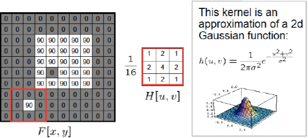
- Removes high frequency components from the image (“low pass filter”). More on this later. - With Gaussian filter, we can preserve more structure, in mean (average) filter there is blockyness, but in Gaussian filter there is a fading kind of affect, no blockyness. - Smoothing with a Gaussian
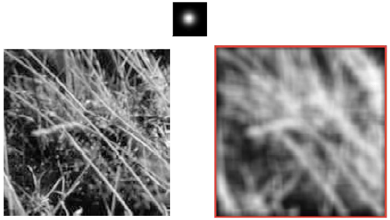
- Mean vs Gaussian
In below pic left is mean, right is Gaussian:
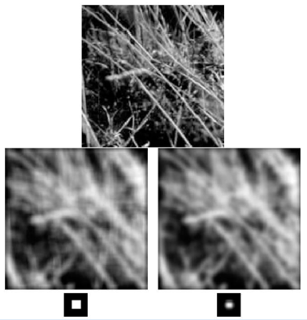
Size of kernel or mask:
- Gaussian function has infinite support, but discrete filters use finite kernels.
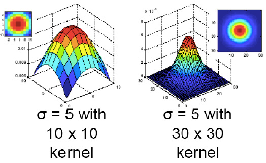
What is the result of filtering the impulse signal (image) F with the arbitrary kernel H?
it double filpps the image
for convolution we dobuble fipp the kernal and then do dot product
3 Effect of simple kernels on image
- Does nothing \left\lbrack \begin{array}{ccc} 0 & 0 & 0\\ 0 & 1 & 0\\ 0 & 0 & 0 \end{array}\right\rbrack
- Blurs \frac{1}{9}\left\lbrack \begin{array}{ccc} 1 & 1 & 1\\ 1 & 1 & 1\\ 1 & 1 & 1 \end{array}\right\rbrack
- Shifts left by one pixel with correlation \left\lbrack \begin{array}{ccc} 0 & 0 & 0\\ 0 & 0 & 1\\ 0 & 0 & 0 \end{array}\right\rbrack
4 Linear Filtering: Correlation Example
What is the result of filtering the impulse signal (image) F with the arbitrary kernel H?
- It double flips the kernel as shown below
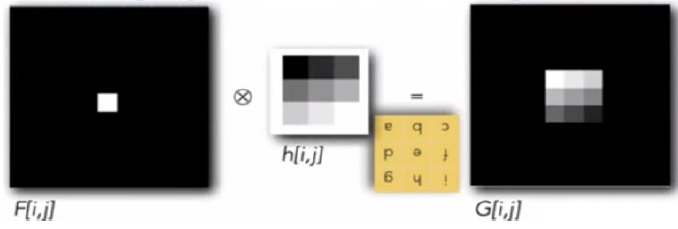
5 Convolution
- Convolution operator G[i,j]=\sum_{u=-k}^{k}\sum_{v=-k}^{k}H[u,v]F[i-u,j-v] and H is then called the impulse response function.
- Equivalent to flip the filter in both dimensions (bottom to top, right to left) and apply cross correlation. Notice minus sign in the above equation (F[i-u,j-v])
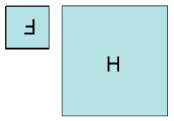 - Denoted by
G=H*F
6 Correlation vs Convolution
Correlation :
G=H\otimes{\cal F}
G[i,j]=\sum_{u=-k}^{k}\sum_{v=-k}^{k}H[u,v]F[i+u,j+v]Convolution :
G=H*F
G[i,j]=\sum_{u=-k}^{k}\sum_{v=-k}^{k}H[u,v]F[i-u,j-v]For a Gaussian or box filter, how will the outputs differ (among correlation and convolution )?
- it will not as filter is symmetric
For impulse image
- we saw above
7 Boundary Effects
- valid conv, we agree ouput will be smaller, we don’t touch the image
- padded conv, we pad the boundary and the conv,
- zero, wrap, clamp. mirror
8 Correlation vs Convolution
Both correlation and convolution are linear shift invariant (LSI) operators , which obey both the superposition principle (Linearity) h\circ(f_{0}+f_{1})=h\circ f_{o}+h\circ f_{1} and the shift invariance principle
\text{If \;\;}g(i,j)=f(i+k,j+l)\leftrightarrow(h\circ g)(i,j)=(h\circ f)(i+k,j+l)which means that shifting a signal commutes with applying the operator.
Is the same as saying that the effect of the operator is the same everywhere.
What’s the difference?
- Commutativity?
- Convolution is commutative, but correlation is not.
- Associativity?
- Convolution is associative, but correlation is not.
- Commutativity?
9 Convolution: A Linear Operator
- Commutative: a * b = b * a
- Conceptually no difference between filter and signal
- Associative: a * (b * c) = (a * b) * c
- Often apply several filters one after another: (((a * b1) * b2) * b3)
- This is equivalent to applying one filter: a * (b1 * b2 * b3)
- Distributes over addition: a * (b + c) = (a * b) + (a * c)
- Scalars factor out: ka * b = a * kb = k (a * b)
- Identity: unit impulse e = [\dots, 0, 0, 1, 0, 0, \dots], a * e = a
10 Separable Filters
- The process of performing a convolution requires K ^2 operations per pixel, where K is the size (width or height) of the convolution kernel.
- In many cases, this operation can be speed up by first performing a 1D horizontal convolution followed by a 1D vertical convolution, requiring 2K operations.
- If this is possible, then the convolution kernel is called separable
- And it is the outer product of two kernels K = vh^T
- How can we tell if a given kernel K is indeed separable?
- Look at the singular value decomposition (SVD) , and if only one singular value is non zero, then it is separable K=\mathbf{U}\Sigma\mathbf{V}^{T}=\sum_{i}\sigma_{i}u_{i}v_{i}^{T} with \Sigma=\mathrm{diag}(\sigma_{i})
{\sqrt{\sigma_{1}}}\mathbf{u}_{1} and {\sqrt{\sigma_{1}}}V_{1}^{T} are the vertical and horizontal kernels.
- Look at the singular value decomposition (SVD) , and if only one singular value is non zero, then it is separable K=\mathbf{U}\Sigma\mathbf{V}^{T}=\sum_{i}\sigma_{i}u_{i}v_{i}^{T} with \Sigma=\mathrm{diag}(\sigma_{i})
11 Image Filtering: Edge Detection
- Map image from 2d array of pixels to a set of curves or line segments or contours .
- More compact than pixels.
- Look for strong gradients, post process.
- Edges look like steep cliffs
- An edge is a place of rapid change in the image intensity function
An edge is a place of rapid change in the image intensity function
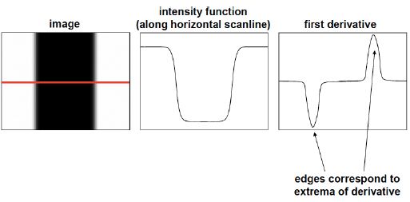
12 Derivatives with convolution
For 2D function, f(x,y), the partial derivative is: \frac{\partial f(x,y)}{\partial x}=\operatorname*{lim}_{\varepsilon\to0}\frac{f(x+\varepsilon,y)-f(x,y)}{\varepsilon}
For discrete data, we can approximate using finite differences: {\frac{\partial f(x,y)}{\partial x}}\approx{\frac{f(x+1,y)-f(x,y)}{1}}
To implement above as convolution, what would be the associated filter?
Sobel Edge Detection Filter
13 Image gradient
The gradient of an image: {\nabla}f=\left[{\frac{\partial f}{\partial x}},{\frac{\partial f}{\partial y}}\right]
The gradient points in the direction of most rapid change in intensity
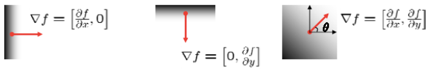The gradient direction orientation of edge normal) is given by: \theta=\tan^{-1}\left(\frac{\partial f}{\partial y}\bigg/\frac{\partial f}{\partial x}\right)
14 Effects of Noise
Consider a single row or column of a noisy image
- Plotting intensity as a function of position gives a signal

- We are not able to find the edge.So we need to smoothen it first.We can use blurring here for proper smoothing.Once smoothing is done, we can apply, gradient operation. Mathematically \displaystyle\frac{\partial }{\partial x}( h*f)
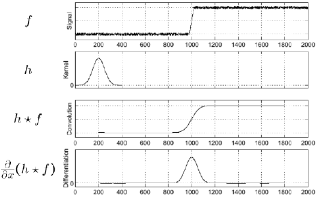 - Notice.Nothing is in convolution operation here.So instead of doing convolution on the image we can First, find the gradient of the convolution filter.And keep it and now, convolve this on the image.As convolution follows associative property, so it will produce the same result as earlier.Mathematically, it can be express as: \displaystyle\left(\frac{\partial }{\partial x} h\right)*f
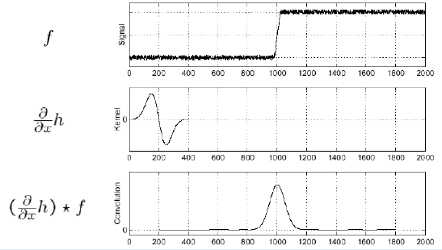
15 Going Beyond Edges
How to combine these two images to form a panorama?
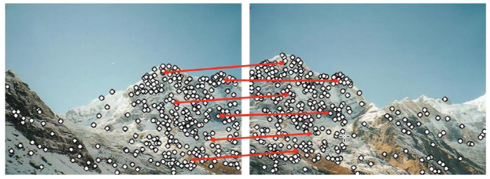The answer is feature extraction and matching, Image alignment
Detection : Identify the interest
Description : Extract vector feature descriptor around each interest point
Matching : Determine correspondence between descriptors in two
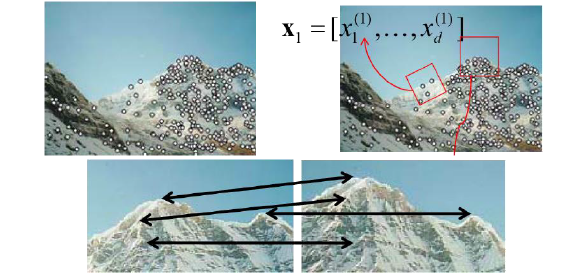to find 6 values of rotaition matrix we nee only 3 pair points.
16 More motivation
- Feature points are used for:
- Image alignment (e.g., mosaics)
- 3D reconstruction
- Motion tracking
- Object recognition
- Indexing and database retrieval
- Robot navigation
17 What point to choose for feature extraction
Want uniqueness
Look for image regions that are unusual: lead to unambiguous matches in other images
How to define “unusual”?
Local measure of uniqueness
Suppose we only consider a small window of pixels
- What defines whether a feature is a good or bad - candidate?
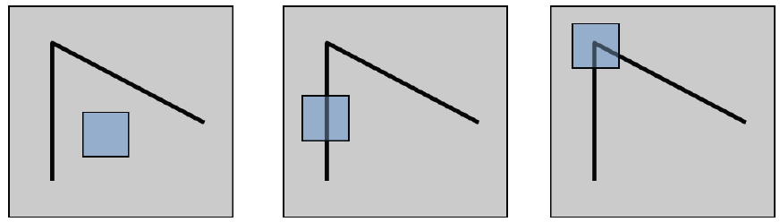 - How does the window change when we shift it?
- Shifting the window in any direction causes a big change
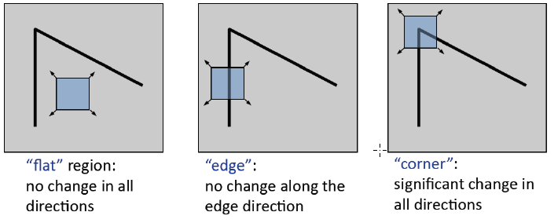
- What defines whether a feature is a good or bad - candidate?
A simple matching criteria
- Consider the below image:
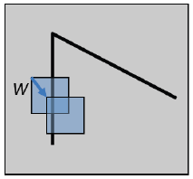
- Consider shifting the window W by (u,v)
- compare each pixel before and after by summing up the squared differences (SSD)
- We can notice that if the window moves on the edge, there will not be any significant squared differences (SSD) here.But if the window moves on the corner then there will be some squared differences (SSD).
- The squared distance is given as below: E(u,v)=\sum_{(x,y)\in W}\left[I(x+v,y+v)-I(x,y)\right]^{2}
- Compare two image patches using (weighted) summed square difference (also, called auto correlation function E_{A C}(\Delta\mathbf{u})=\sum_{\cdot}{\mathbf{}}w(\mathbf{p}_{i})[I_{0}(\mathbf{p}_{i}+\Delta u)-I_{0}(\mathbf{p}_{i})]^{2} 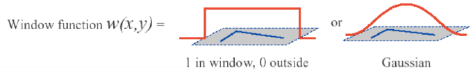
18 How to select an interest point
- Small motion assumption
- Using a Taylor Series expansion I_{0}({\bf p}_{i}+\Delta{\bf u})\approx I_{0}({\bf p}_{i})+\nabla I_{0}({\bf p}_{i})\Delta{\bf u} where \nabla I_{0}(\mathbf{p}_{i})=\left({\frac{\partial I_{0}}{\partial x}},{\frac{\partial I_{0}}{\partial y}}\right)(\mathbf{p}_{i})
- the image gradient. We can approximate the autocorrelation as \begin{align*} E_{A C}(\Delta\mathbf{u})&=\sum_{\cdot}{\mathbf{}}w(\mathbf{p}_{i})[I_{0}(\mathbf{p}_{i}+\Delta u)-I_{0}(\mathbf{p}_{i})]^{2}\\ &\approx\sum_{\cdot}{\mathbf{}}w(\mathbf{p}_{i})[I_{0}({\bf p}_{i})+\nabla I_{0}({\bf p}_{i})\Delta{\bf u}-I_{0}(\mathbf{p}_{i})]^{2}\\ &=\sum_{\cdot}{\mathbf{}}w(\mathbf{p}_{i})[\nabla I_{0}({\bf p}_{i})\Delta{\bf u}]^{2}\\ &=\Delta \mathbf u^T \mathbf A\Delta \mathbf u \end{align*}
- Gradient can be computed with the filtering techniques we saw, e.g., derivatives of Gaussians.
- The autocorrelation is E_{A C}(\Delta\mathbf{u}) = \Delta \mathbf u^T \mathbf A\Delta \mathbf u with \mathbf{A}=\sum_{u}\sum_{\nu}w(u,v)\left[{\begin{array}{l l}{I_{x}^{2}}&{I_{x}J_{y}}\\ {I_{y}I_{x}}&{I_{y}^{2}}\end{array}}\right]=w*\left[{\begin{array}{l l}{I_{x}^{2}}&{I_{x}I_{y}}\\ {I_{y}I_{x}}&{I_{y}^{2}}\end{array}}\right] where we have replaced the weighted summations with discrete convolutions with the weighting kernel w.
19 Using eigenvalues
The eigenvalues of \mathbf A reveal the amount of intensity change in the two principal orthogonal gradient directions in the window. \mathbf{A}=\mathbf{U}\left[\begin{array}{c c}{{\lambda_{0}}}&{{0}}\\ {{0}}&{{\lambda_{1}}}\end{array}\right]\mathbf{U}^T with \mathbf{A}\mathbf{u}_{i}=\lambda_{i}\mathbf{u}_{i}
In case of matrix:
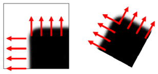
An example, here \lambda is an eigen value
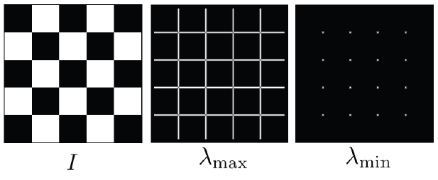
Classification of image points using eigenvalues of \mathbf A
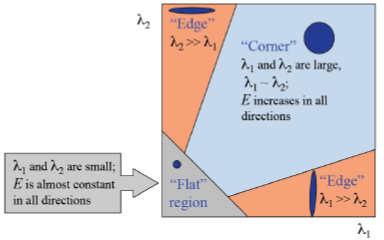
Type of responses
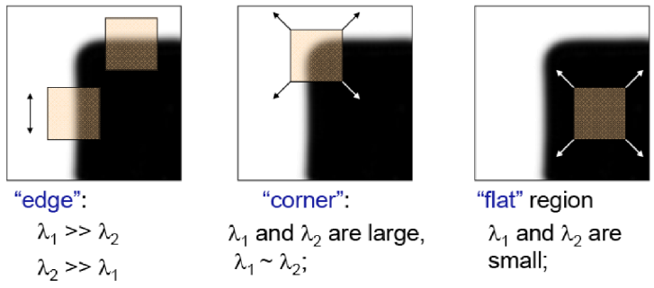
But here we still need to calculate the eigenvalues. There is a method where we can compare the eigenvalues without even calculating it.
We know that the trace of a matrix is the summation of the eigenvalues and the determinant of the matrix is the multiplication of the eigenvalues. We will use the same property.
20 Harris corner detector
- First compute the gradient at each point of the image.
- Compute \mathbf A for each image window to get its cornerness scores
- Compute the eigenvalues/compute the following function M_c M_{c}=\lambda_{1}\lambda_{2}-\kappa\left(\lambda_{1}+\lambda_{2}\right)^{2}=\operatorname*{det}(A)-\kappa\ \mathrm{trace}^{2}(A)
- Find points whose surrounding window gave large corner response (M_c > threshold).
- Take the points of local maxima, i.e., perform non maximum suppression.
21 A lot of other interest point detectors
- Hessian
- Lowe:DoG
- Lindeberg: scale selection
- Mikolajczyk& Schmid : Hessian/Harris Laplacian/Affine
- Tuyttelaars & Van Gool: EBR and IBR
- Matas: MSER
- Kadir& Brady: Salient Regions
- SpeededUp Robust Features (SURF) of Bay et al.
22 SIFT
Step 1: Scales-pace extrema Detection: Detect interesting points (invariant to scale and orientation) using DOG.
Step 2:Keypoint Localization: Determine location and scale at each candidate location, and select them based on stability.
Step 3: Orientation Estimation: Use local image gradients to assigned orientation to each localized key point . Preserve theta, scale and location for each feature.
Step 4:Keypoint Descriptor: Extract local image gradients at selected scale around keypoint and form a representation invariant to local shape distortion and representation invariant to local shape distortion and illumination them.
SIFT: Scale space Extrema Detection
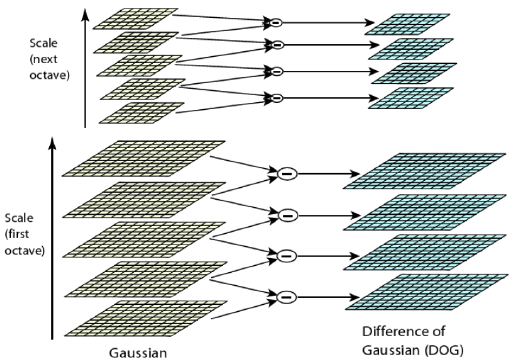
Constructing scale space
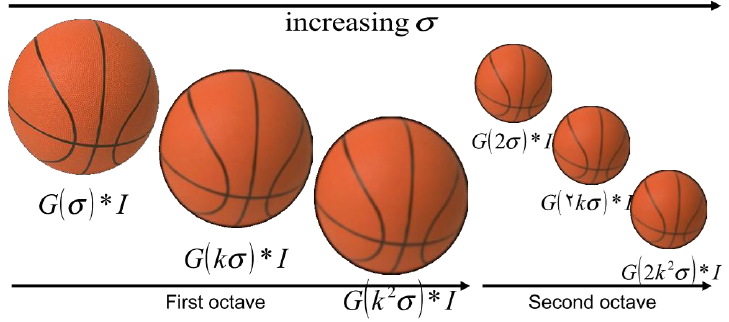
D(x,y,\sigma)=L(x,y,k\sigma)-L(x,y,\sigma) where L(x,y,\sigma)=G(x,y,\sigma)*I(x,y)
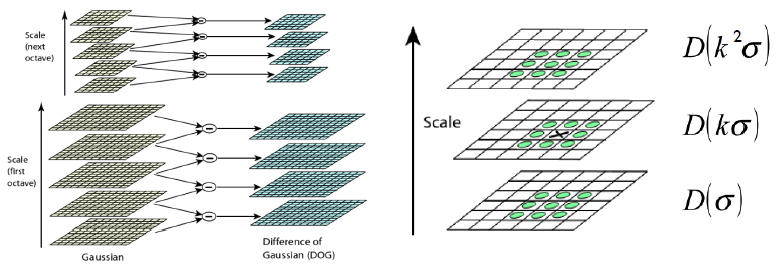
Determine the location and scale of keypoints to sub-pixel and sub-scale accuracy by fitting a 3D quadratic polynomial:
- Key point location: X_i = (x_i,y_i,\sigma_i)
Note: We are finding key points for each and every scale. If there is a corner at one scale, tt can look like an edge, at another scale. - offset : \Delta X = (x-x_i,y-y_i,\sigma-\sigma_i)
Map the image back to the original location. - Sub-Pixel, Sub-scale, estimated location: X_i=X_i+\Delta X
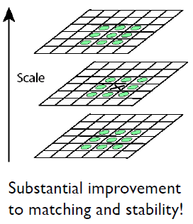
- Key point location: X_i = (x_i,y_i,\sigma_i)
SIFT: Keypoint Localization
- Use Taylor expansion to locally approximate D(x,y, \sigma ) (i.e., DoG function) and estimate \Delta X D(\Delta X)=D(X_{i})+{\frac{\partial D^{T}(X_{i})}{\partial X}}\Delta X+{\frac{1}{2}}\Delta X^{T}\,{\frac{\partial^2 D(X_{i})}{\partial X^2}}\Delta X
- Find the extrema of D( \Delta X): \frac{\partial D(X_{i})}{\partial X}+\frac{\partial ^{2}D(X_{i})}{\partial X^{2}}\Delta X=0 From above we get \Delta X=-\frac{\displaystyle{\partial}^{2}D^{-1}(X_{i})}{\displaystyle{\partial}X^{2}}\frac{\partial D(X_{i})}{\displaystyle{\partial}X}
- \Delta X can be computed by solving a 3x3 linear system \displaystyle \begin{bmatrix} \displaystyle\frac{\partial^2 D}{\partial \sigma^2} &\displaystyle \frac{\partial^2 D}{\partial \sigma y} &\displaystyle \frac{\partial^2 D}{\partial \sigma x}\\ \displaystyle\frac{\partial^2 D}{\partial \sigma y} &\displaystyle \frac{\partial^2 D}{\partial y^2} &\displaystyle \frac{\partial^2 D}{y x} \\ \displaystyle\frac{\partial^2 D}{\partial \sigma x} &\displaystyle \frac{\partial^2 D}{\partial yx} &\displaystyle \frac{\partial^2 D}{ \partial x^2} \end{bmatrix} \begin{bmatrix} \Delta \sigma\\ \Delta y\\ \Delta x\\ \end{bmatrix}=- \begin{bmatrix} \displaystyle \frac{\partial D}{ \partial \sigma} \\ \displaystyle \frac{\partial D}{ \partial y} \\ \displaystyle \frac{\partial D}{ \partial x} \end{bmatrix} where \begin{align*} {\frac{\partial D}{\partial\sigma}}&={\frac{D_{k+1}^{i,j}-D_{k-1}^{i,j}}{2}}\\ \frac{{\partial}^{2}D}{{\partial}\sigma^{2}}&=\frac{D_{k-1}^{i,j}-2D_{k}^{i,j}+D_{k+1}^{i,j}}{1}\\ \frac{\partial^{2}D}{\partial\sigma y}\!&=\!\frac{({D}_{k+1}^{i+1,j}-{D}_{k-1}^{i+1,j})\!-\!({D}_{k+1}^{i-1,j}-{D}_{k-1}^{i-1,j})}{4}\\ \end{align*} if \Delta X>0.5 in any dimension, repeat.
- Next, reject the low contrast points and the points that lie on the edge
- Low contrast points elimination:
- if |D(X_{i}+\Delta X)|<0.03 reject keypoint.
- assumes that image values have been normalized in [0,1]
- if |D(X_{i}+\Delta X)|<0.03 reject keypoint.
- Edge elimination
Similar to Harris corner detector!
SIFT instead uses Hessian \mathbf{H}={\left[\begin{array}{l l}{D_{x x}}&{D_{x y}}\\ {D_{x y}}&{D_{y y}}\end{array}\right]} \begin{align*} \operatorname{Tr}(\mathbf{H})&=D_{x x}+D_{y y}=\alpha+\beta,\\ \operatorname{Det}({\bf H})&=D_{x x}D_{y y}-(D_{x y})^{2}=\alpha\beta. \end{align*} Hence {\frac{\operatorname{Tr}(\mathbf{H})^{2}}{\operatorname{Det}(\mathbf{H})}}={\frac{(\alpha+\beta)^{2}}{\alpha\beta}}={\frac{(r\beta+\beta)^{2}}{r\beta^{2}}}={\frac{(r+1)^{2}}{r}}, Reject key point if \frac{\mathrm{Tr}({\bf H})^{2}}{\mathrm{Det}({\bf H})}<\frac{(r+1)^{2}}{r} (SIFT uses r = 10) (r=\frac{\alpha}{\beta})
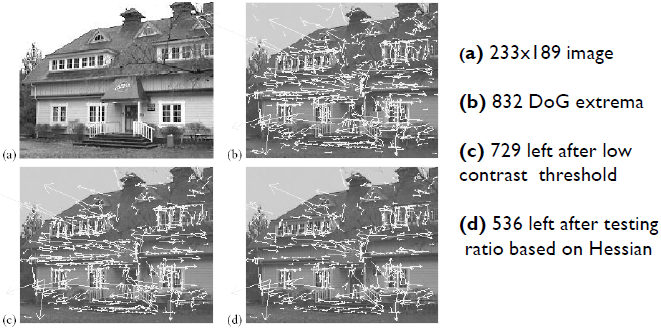
SIFT: Orientation Assignment
Use scale of point to choose correct image: L(x,y)=G(x,y,\sigma)*I(x,y)
Compute gradient magnitude and orientation using finite differences: \begin{align*} m\bigl(x,y\bigr)&=\sqrt{\bigl(L(x+1,y)-L\bigl(x-1,y\bigr)\bigr)^{2}+\bigl(L(x,y+1)-L\bigl(x,y-1\bigr)\bigr)^{2}}\\ \theta(x,y)&=\tan^{-1}\left(\frac{\left(L(x,y+1)-L(x,y-1)\right)}{\left(L(x+1,_{,}y)-L(x-1,_{,}y)\right)}\right) \end{align*}
Use this to compute final descriptor.
Create histogram of gradient directions, within a region around the keypoint, at selected scale: L(x,y,\sigma)=G(x,y,\sigma){*}\,J(x,y) and m(x,y)={\sqrt{(L(x+1,y)-L(x-1,y))^{2}+(L(x,y+1)-L(x,y-1))^{2}}} and \theta(x,y)=a\tan2{\big(}(L(x,y+1)-L(x,y-1){\big)}/(L(x+1,y)-L(x-1,y){\big)})
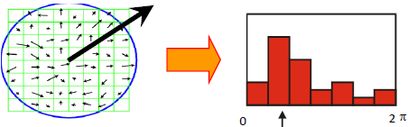
Histogram entries are weighted by ( i ) gradient magnitude and (ii) a Gaussian function with \sigma equal to 1.5 times the scale of the keypoint
SIFT: Feature descriptor
Compute the gradient at each pixel in a 16 \times 16 window around the detected keypoint, using the appropriate level of the Gaussian pyramid at which the keypoint was detected.
Downweight gradients by a Gaussian fall off function (blue circle) to reduce the influence of gradients far from the center.
In each 4 x 4 quadrant, compute a gradient orientation histogram using 8 orientation histogram bins.
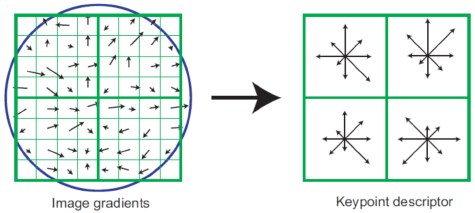
The resulting 128 nonnegative values form a raw version of the SIFT descriptor vector.
To reduce the effects of contrast or gain (additive variations arealready removed by the gradient), the 128 D vector is normalized tounit length.
Great engineering effort!
Extraordinarily robust matching technique
- Changes in viewpoint: up to about 60 degree out of plane rotation
- Changes in illumination: sometimes even day vs. night
- Fast and efficientcan run in real time
- Lots of code available
Review
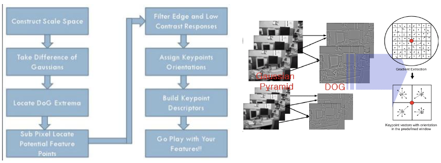
SURF = Speeded Up Robust Features
- Uses box filters instead of Gaussians to approximate Laplacians
- Uses wavelets to get keypoint orientations
- Few more changes (including indescriptor generation)
- Leads to 3x speedup over SIFT
More on image features: LBP Computer Vision
LBP = Local Binary Patterns
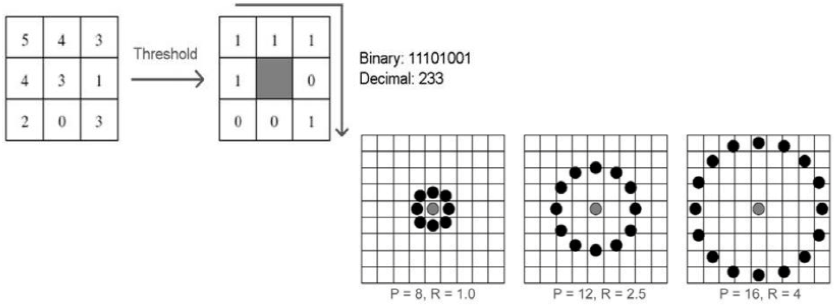
\tiny {\textcolor{#808080}{\boxed{\text{Reference: Dr. Vineeth, IIT Hyderabad }}}}